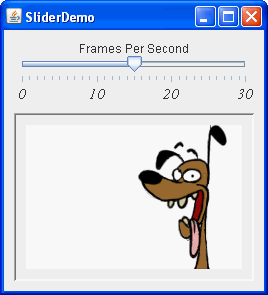

Lección: Usando Componentes Swing
Sección: Cómo Usar Varios Componentes
Cómo Usar Deslizadores
Un componente
JSlider
está destinado a permitir al usuario ingresar fácilmente un valor numérico limitado por un valor mínimo y
máximo. Si el espacio es limitado, un contador numérico es una alternativa posible a
un control deslizante.
La siguiente foto muestra una aplicación que usa undeslizador para controlar la velocidad de la animación:

Pruebe esto:
-
Pulse el botón Lanzar para ejecutar SliderDemo usando
Java™ Web Start (
descargue KDJ 7 o posterior). Alternativamente, para compilar y ejecutar el ejemplo usted mismo
consulte el
the índice de ejemplos.

- Use el deslizador para ajustar la velocidad de la animaciónto adjust the animation speed.
- Empuje el deslizador a 0 para parar la animación.
Debajo está el código del fichero
SliderDemo.java que crea el deslizador en el ejemplo previo.
static final int FPS_MIN = 0;
static final int FPS_MAX = 30;
static final int FPS_INIT = 15; //fotogramas iniciales por segundo
. . .
JSlider framesPerSecond = new JSlider(JSlider.HORIZONTAL,
FPS_MIN, FPS_MAX, FPS_INIT);
framesPerSecond.addChangeListener(this);
//Activa las etiquetas en las marcas principales.
framesPerSecond.setMajorTickSpacing(10);
framesPerSecond.setMinorTickSpacing(1);
framesPerSecond.setPaintTicks(true);
framesPerSecond.setPaintLabels(true);
Por defecto, el espaciado para las marcas de graduación mayores y menores es cero. Para ver ls marcas de
graduación, debe explícitamente establecer el espacio para o la mayor o menor marca de graduación (o ambas) a un
valor que no sea cero y llamar al método setPaintTicks(true). Sin embargo, también necesita
etiquetas para sus marcas de graduación. Para visualizar etiquetas numéricas estándar en el lugar de la mayor
marca de graduación, establezca el espacion de la marca mayor, después llame al método
setPaintLabels(true). El programa de ejemplo suministra etiquetas para su deslizador de esta forma.
Pero no está limitado a usar sólo estas etiquetas. Personalizar Etiquetas en un Deslizador
le muestra cómo personalizar las etiquetas del deslizador. Además, una característica del deslizador le permite
establecer una fuente para el componente JSlider.
Font font = new Font("Serif", Font.ITALIC, 15);
framesPerSecond.setFont(font);
Cuando mueve el tirador del deslizador, el método stateChanged del ChangeListener deñ
deslizador es llamado. Para más información sobre los oyentes de cambio, consulte
Cómo Escribir un Change Listener. Aquí está el código del oyente de
cambio que reacciona los cambios de valor del deslizador:
public void stateChanged(ChangeEvent e) {
JSlider source = (JSlider)e.getSource();
if (!source.getValueIsAdjusting()) {
int fps = (int)source.getValue();
if (fps == 0) {
if (!frozen) stopAnimation();
} else {
delay = 1000 / fps;
timer.setDelay(delay);
timer.setInitialDelay(delay * 10);
if (frozen) startAnimation();
}
}
}
No te que el método stateChanged cambia la velocidad de la animación sólo si el método
getValueIsAdjusting devuelve false. Muchos eventos de cambio se disparan mientras el
usaurio mueve el tirador del deslizador. Este programa sólo está interesado en el resultado final de la acción
del usuario.
Personalizar Etiquetas en un Deslizador
La demostración de abajo es una versión modificada de SliderDemo que usa un deslizador con etiquetas personalizadas:

El fuente para este programa se encuentra en
SliderDemo2.java
.
Pulse el botón Lanzar para ejecutar SliderDemo2usando
Java™ Web Start
(
descargue KDJ 7 o posterior).
Alternativamente, para compilar y ejecutar el ejemplo usted mismo, consulte el
índice de ejemplo.
El código siguiente crea el deslizador y personaliza sus etiquetas:
//Crea el deslizador
JSlider framesPerSecond = new JSlider(JSlider.VERTICAL,
FPS_MIN, FPS_MAX, FPS_INIT);
framesPerSecond.addChangeListener(this);
framesPerSecond.setMajorTickSpacing(10);
framesPerSecond.setPaintTicks(true);
//Crea la etiqueta de la tabla
Hashtable labelTable = new Hashtable();
labelTable.put( new Integer( 0 ), new JLabel("Parar") );
labelTable.put( new Integer( FPS_MAX/10 ), new JLabel("Lento") );
labelTable.put( new Integer( FPS_MAX ), new JLabel("Rápido") );
framesPerSecond.setLabelTable( labelTable );
framesPerSecond.setPaintLabels(true);
Cada par clave-valor en la tabla hash especificada con el método setLabelTable da la posición y el
valor de una etiqueta. La clave de la tabla hash debe ser del tipo Integer y debe tener un valor
dentro del rango del deslizador al cual colocamos la etiqueta. El valor de la tabla hash asociado con cada clave
debe ser un objeto Component. Esta demostración usa instancias de JLabel con texto
solo. Una modificación interesante sería usar instancias de JLabel con iconos o botones que muevan
el tirador a la posición de las etiqueta.
Use el método createStandardLabels de la clase JSlider para crear un conjunto de
etiquetas numéricas posicionadsa en un intervalo específico. Puede también modificar la tabla devuelta por el
método createStandardLabels para personalizarlo.
La IPA del Deslizador
Las siguientes tablas enumeran los constructores comunmente usados de JSlider. Vea
La Clase JComponent para las tablas de los métodos heredados usados comunmente.
La IPA para usar deslizadores se divide en estas categorias:
- Crear el Slider
- Ajuste Fino de la Apariencia del Slider
- Observar la Operación del Slider
- Trabajar Directamente con el Modelo de Datos
| Constructor | Propósito |
|---|---|
| JSlider() | Crea un deslizador horizontal con el rango de 0 a 100 y un valor inicial de 50. |
|
JSlider(int min, int max)
JSlider(int min, int max, int value) |
Crea un deslizador horizontal con los valores mínimos y máximos especificados. El tercer argumento
int, cuando está presente, especifica el valor inicial del deslizador.
|
|
JSlider(int orientation)
JSlider(int orientation, int min, int max, int value) |
Crea un deslizador con la orientación especificada, la cual debe ser o JSlider.HORIZONTAL o
JSlider.VERTICAL. Los últimos tres argumentos int, cuando existen, especifican
los valores mínimo, máximo, e inicial del deslizador, respectivamente.
|
| JSlider(BoundedRangeModel) | Crea un deslizador horizontal con el modelo especificado, el cual gestiona los valores mínimos, máximos e iniciales del deslizador y sus relaciones. |
| Método | Propósito |
|---|---|
|
void setValue(int)
int getValue() |
Establece u obtiene el valor actual del deslizador. El método set también posiciona el tirador del deslizador. |
|
void setOrientation(int)
int getOrientation() |
Establece u obtiene la orientación del deslizador. Los valores posibles son
JSlider.HORIZONTAL o JSlider.VERTICAL.
|
|
void setInverted(boolean)
boolean getInverted() |
Establece u obtiene si el máximo es mostrador a la izquierda de un deslizador horizontal o al final de uno vertical, invirtiendo así el rango del deslizador. |
|
void setMinimum(int)
int getMinimum() void setMaximum(int) int getMaximum() |
Establece u obtiene los valores mínimos y máximos de un deslizador. Juntos, estos métodos establecen u obtienen el rango del deslizador. |
|
void setMajorTickSpacing(int)
int getMajorTickSpacing() void setMinorTickSpacing(int) int getMinorTickSpacing() |
Establece u obtiene el rango entre las marcas de graduación mayores y menores. Debe llamar a
setPaintTicks(true) para que las marcas de graduación aparezcan.
|
|
void setPaintTicks(boolean)
boolean getPaintTicks() |
Establece u obtiene si las marcas de graduación son pintadas sobre el deslizador. |
|
void setPaintLabels(boolean)
boolean getPaintLabels() |
Establece u obtiene si las etiquetas son pintadas sobre el deslizador. Puede suministrar etiquetas
personalizadas con setLabelTable u obtener etiquetas automáticas estableciendo el espacio
de la marcas principales a un valor no cero.
|
|
void setLabelTable(Dictionary)
Dictionary getLabelTable() |
Establece u obtiene las etiquetas para el deslizador. Debe llamar a setPaintLabels(true)
para que las etiquetas aparezcan.
|
|
Hashtable createStandardLabels(int)
Hashtable createStandardLabels(int, int) |
Crea un conjunto estándar de etiquetaas numéricas. El primer argumento int especifica el
incremento. el segundo argumento int especifica el punto de inicio. Cuando se dejan sin
especificar, el punto de inicio es establecido al número mínimo del deslizador.
|
| setFont(java.awt.Font) | Establece la fuente para las etiquetas del deslizador. |
| Método | Propósito |
|---|---|
| void addChangeListener(ChangeListener) | Registra un oyente de cambios con el deslizador. |
| boolean getValueIsAdjusting() | Determina si el gesto del usuario para mover el tirador del deslizador se ha completado. |
| Clase, Interfaz, o Método | Propósito |
|---|---|
| BoundedRangeModel | El interfaz requirido para el modelo de datos del deslizador. |
| DefaultBoundedRangeModel | Una implementación del interfaz BoundedRangeModel. |
|
void setModel()
getModel() (in JSlider)
|
Establece u obtiene el modelo de datos usado por el deslizador. Puede también establecer el modelo
usando el constructor que toma un argumento simple del tipoBoundedRangeModel.
|
Ejemplos que Usen Deslizadores
Esta tabla muestra los ejemplos que usan JSlider y dónde esos ejemplos están descritos.
| Ejemplo | Donde se describe | Notas |
|---|---|---|
SliderDemo |
Esta sección | Muestra un deslizador con etiquetas en las marcas principales. |
SliderDemo2 |
Esta sección | Muestra un deslizador vertical con etiquetas pesonalizadas. |
Converter |
Cómo Usar Modelos, Como Usar Paneles |
Una aplicación de conversión de medidas con dos deslizadores que comparten datos y tienen un
BoundedRangeModel personalizado.
|
Si está programando en JavaFX, vea Deslizadores.